¿Cuál es tu número de teléfono?
Te enviaremos un código para confirmarlo.
¿Cuál es tu nuevo número de teléfono?
Te enviaremos un código para confirmarlo.
Introduce el código
Te hemos enviado un código de 4 dígitos.
Introduce el código
Te hemos enviado un código de 4 dígitos.
Hola, soy Nidi.
Estoy aquí para ayudarte en lo que necesites.

Explora fotos
Todas tus fotos organizadas sin ningún esfuerzo. Solo tienes que entrar y explorar fotos de tus momentos o personas favoritas.

Nidi siempre ahí
Siempre acompañado, puedes hablar con Nidi por voz y preguntarle cualquier duda.
Si lo prefieres, Nidi lo hace por ti.

Crea felicitaciones
Crea felicitaciones a partir de fotos para compartir con tus seres queridos.
Mis recuerdos
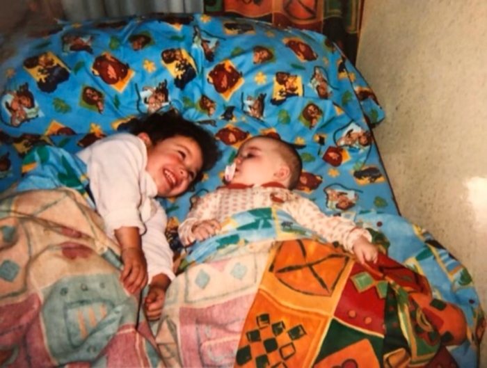
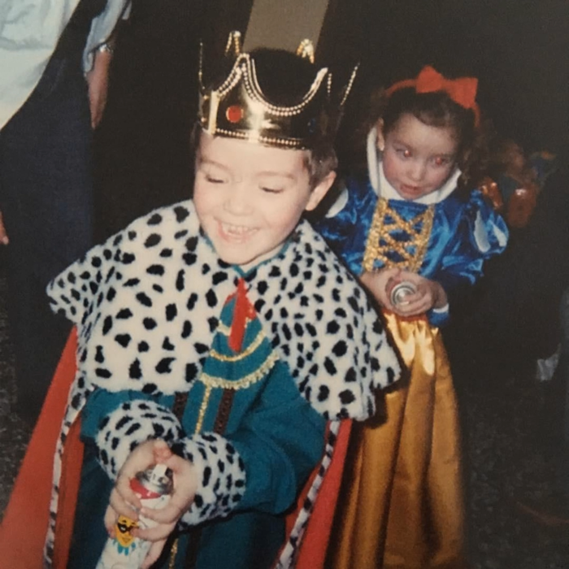
Mis recuerdos
Mis recuerdos
Mis recuerdos
Mis recuerdos
Mis recuerdos
Mis recuerdos
Álbumes
Mis álbumes
Álbumes
Mis álbumes
Álbumes
Mis álbumes
¿Cómo quieres llamar a tu nuevo álbum?
Toca en el micrófono y dímelo.
....
¿Quieres que tu álbum se llame así?
Todas tus fotos
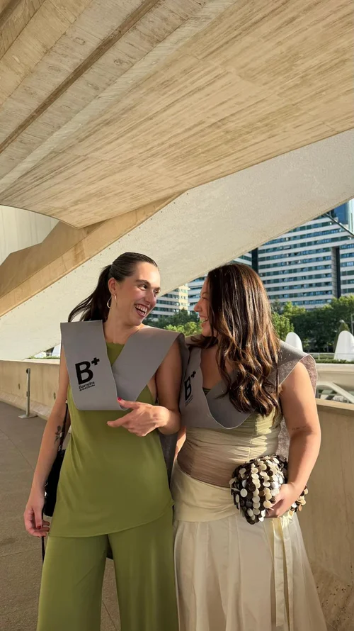
Elige las fotos a añadir
Yo
Mis felicitaciones
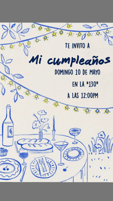
Personas
Grupos de personas
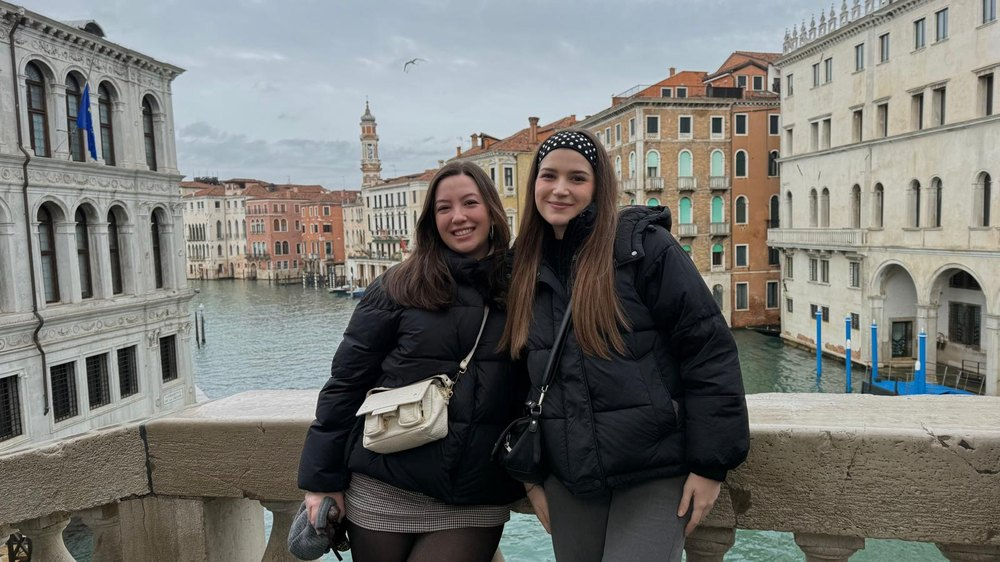
Clara y Ana
Clara y Ainhoa
Personas
Grupos de personas
Persona
Persona
Imágenes
Persona
Vídeos
Elige un estilo
¿Qué tipo de felicitación quieres crear?
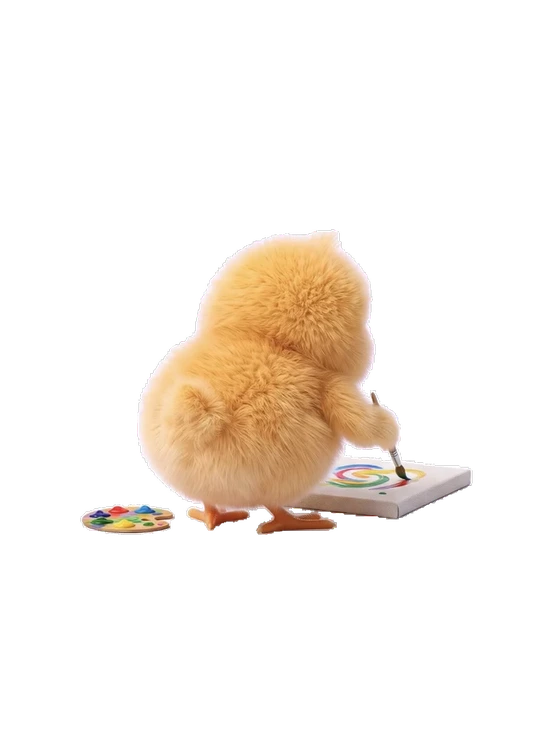
Creando imagen
Felicitación
Álbum nuevo
Álbum vacío
Todavía no hay fotos, pulsa en añadir para elegirlas.
Ajustes
Mis documentos
Documentos identificativos
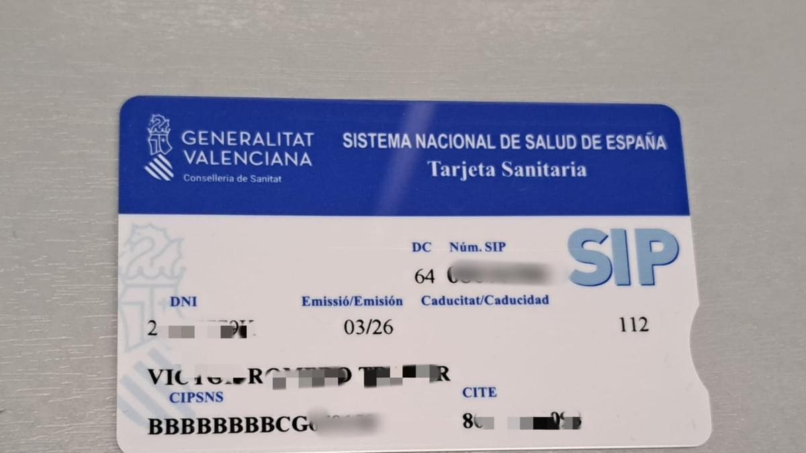
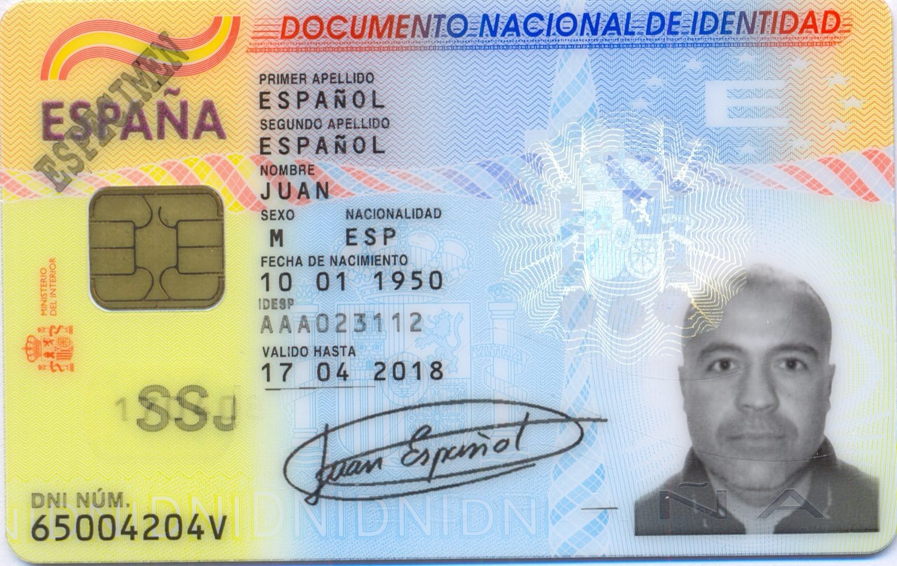
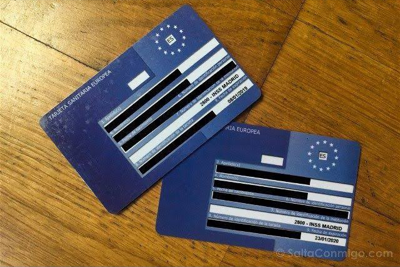
Horarios
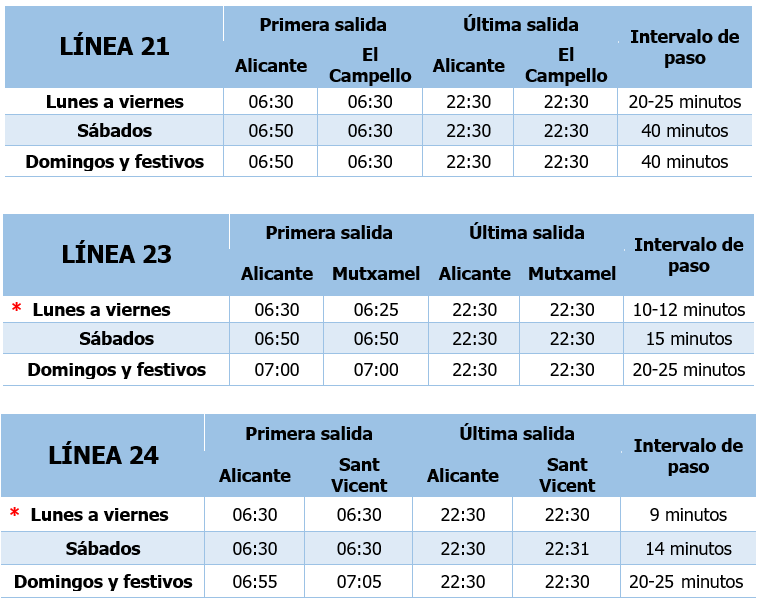
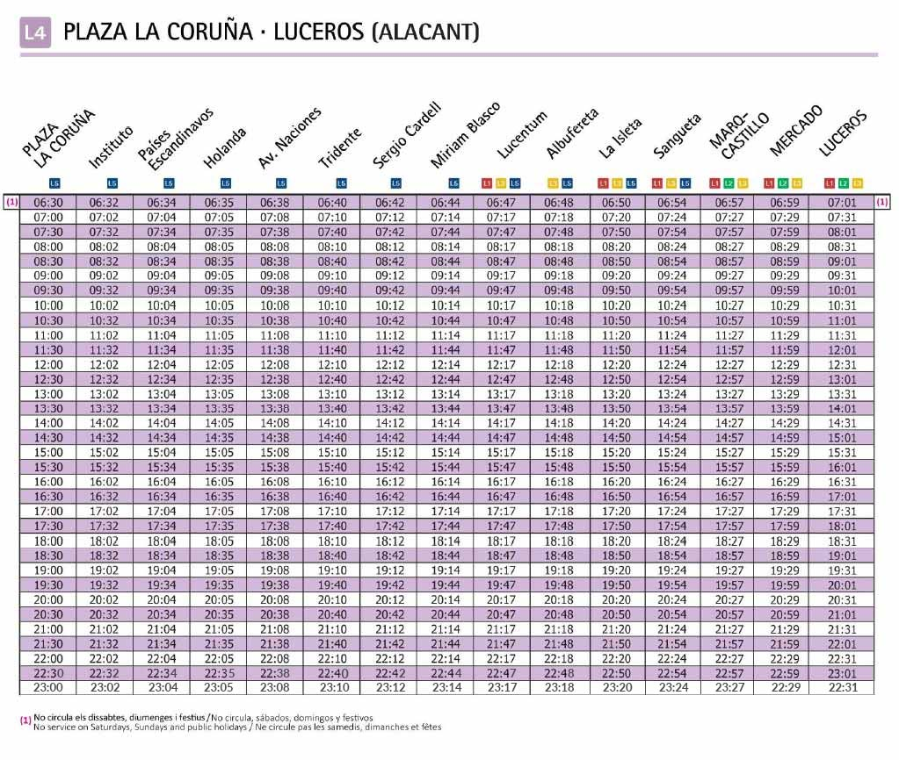
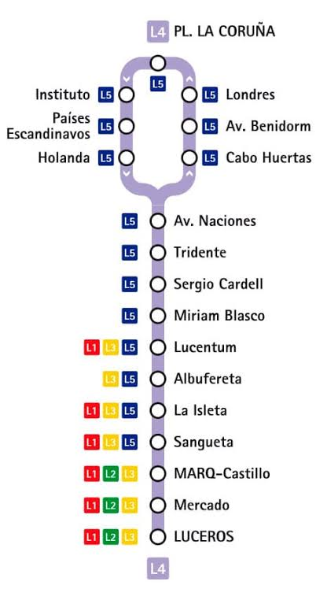
Otros documentos
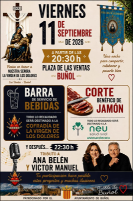
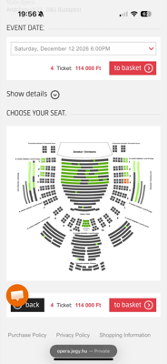
Horarios
Detalle foto
¿Cómo se llama esta persona?
Toca en el micrófono y dímelo.
¿Qué quieres hacer con esta persona?
¿Qué quieres crear?
Creando tu recuerdo...
No se ha podido crear. Puede ser el servidor de pruebas o la conexión.
¿Quieres eliminar la foto de la app?